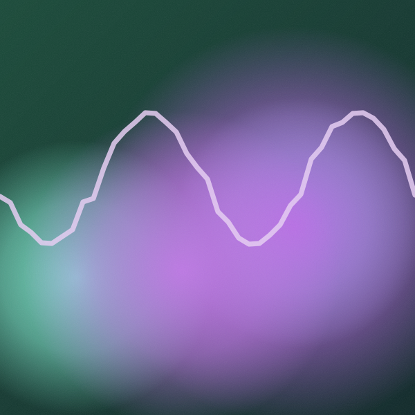
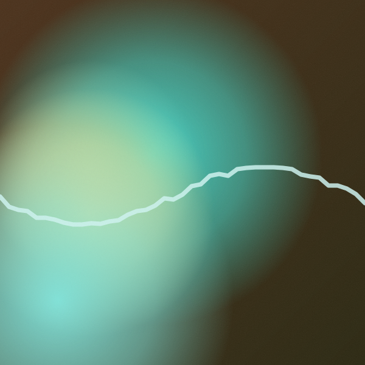

Discover
Forty-nine songs you can play right now. Tap one and it starts.
Search by title, country or style
＋ Add a song
THIS WEEK
Danny Boy
The Londonderry Air, played the way you know it. A slow, generous melody that sits beautifully on the alto sax.
MEDIUMIRELAND1:58
▶ Play Print sheet
Great for beginners

Twinkle, Twinkle, Little Star
Easy · 0:35

Happy Birthday to You
Easy · 0:34

Amazing Grace
Easy · 1:20

Swing Low, Sweet Chariot
Easy · 1:05

Ode to Joy
Easy · 0:58